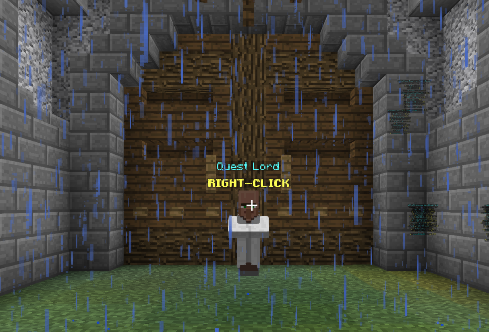

Illusion Vanguard UPDATE - v1.0.7
Wave Defense
General
- Added showing daily/weekly coins/experience to guild menu.
- Titles for Legendary Weapons are now permanently unlocked upon purchase. You can now freely switch between the titles that you've purchased.
- Added +5 Legend Fragment bonus for each level of prestige a player has every 25 waves.
- Greatly buffed the rewards from the Masterworks Fair.
- Decreased the (relative) drop rate of Rare and Epic Star Pieces.
- Documentation of Masterworks Fair and Susan will be updated soon.
- Added Monthly Patreon Rewards!
- The Suspicious title's sound effect can now be heared by all players..
Guilds
- Increased Max Guild Coin Conversion from 300 to 1000.
- Bonus coins earned from the Coins Bonus temporary Guild Upgrade are not factored into Guild Coin Conversion.
Daily and Weekly Quests
- Added Daily and Weekly quests to aid progression.
- There are 3 Daily Quests and 2 Weekly Quests
- Quests are automatically activated.
- You may view quest details by talking to the Quest Lord NPC. 
- Quests will reset daily around Server Restart time (6AM EST).
- Weekly quests will reset every Monday around Server Restart time (6AM EST).
Bug Fixes
- Fixed Remedic Chains Master giving permanent health boost when stacked...
- Fixed Clear Rate Leaderboard (ACTUALLY? HOPEFULLY?? ????)
- Fixed titling weapon not costing money and shards.
- Fixed Legendary weapon skill boosts not being permanently unlocked when a Skill Boost Modifier is used.
- Fixed offline players being counted as a player when the game starts.